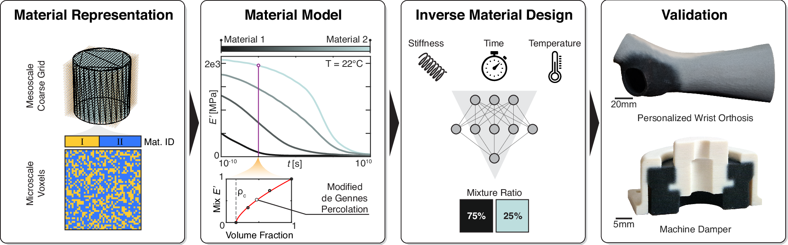
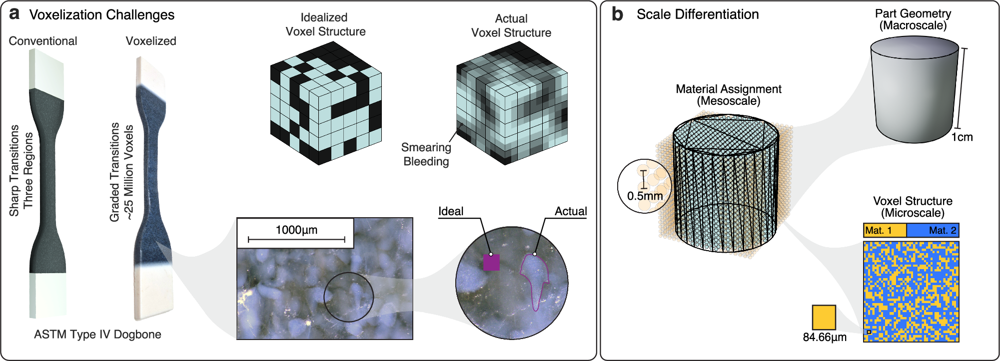
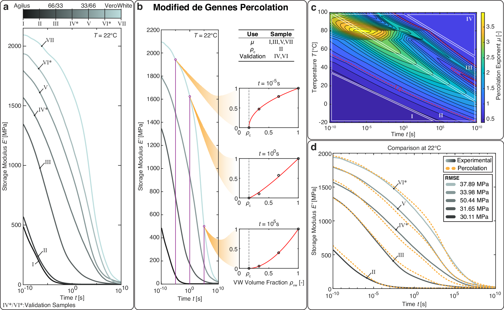
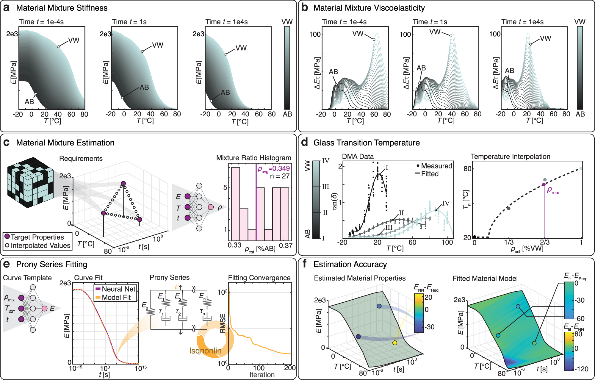
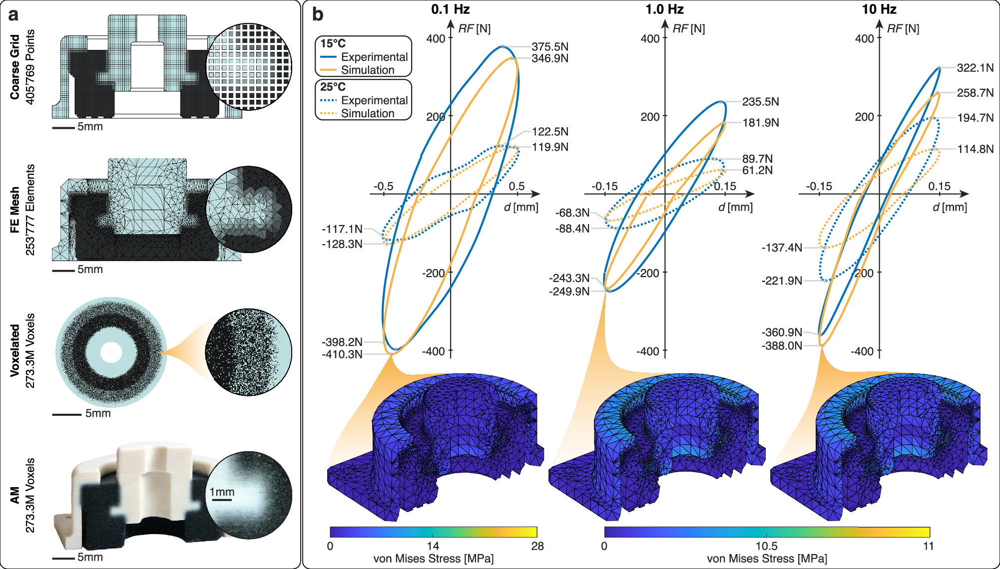
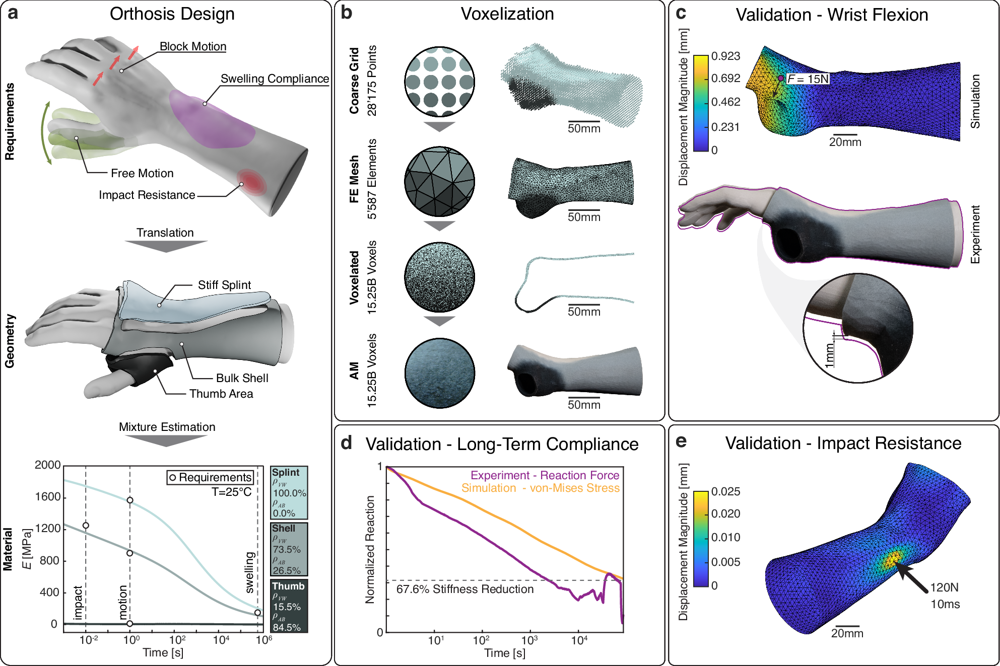

全文精读
随机体素化热黏弹性数字材料的逆向设计
Inverse design of stochastic, voxelated thermo-viscoelastic digital materials
解读更新 2026-10-20 09:16 · 依据论文全文整理
全文精读已完成，文章版正在逐步升级。现有内容可继续阅读。
如何让同一打印结构既抵抗瞬时冲击，又能长期柔顺变形？本文将随机混合体素材料表示为介观粗网格，以温度、频率相关渗流模型描述两种聚合物的黏弹性，再通过神经网络从性能需求反推混合比例。阻尼器与腕部矫形器展示了滞回预测及分区选材能力，但阻尼器高频误差上升，矫形器冲击仅经模拟验证。其价值在于连接材料配比、跨时间尺度响应与结构仿真，而非证明任意材料泛化或临床有效性。
研究问题
随机体素混合既带来庞大的材料分配空间，又产生难以逐体素模拟的复杂界面。作者指出，既有方法常局限于弹性或单一工况，缺少从目标黏弹性响应到混合比例的可扩展映射。核心问题是兼顾计算效率、制造真实性与跨温度和时间尺度的性能设计。
方法与路线
作者以粗网格保存局部混合比例，制造时再随机分配体素；通过DMA、时温叠加及Prony系列标定温频相关渗流模型。ANN_mix估计需求对应配比，ANN_E生成刚度主曲线，再拟合含超弹性元件的黏弹模型用于有限元分析。
创新与比较
方法特色是把介观材料表示、扩展渗流关系与逆向选材串成统一流程，而非直接优化每个体素。渗流系数随温度和频率变化，使混合规律能够描述不同响应区间。解读：其创新重心是材料行为的任务独立参数化，不是新增几何生成算法或实测训练大数据库。
证据与发现
阻尼器在0.1、1、10 Hz下跨两温度的平均反力误差分别为5.6%、20.0%、26.6%，说明预测能力随频率变化。腕屈实验与模拟位移分别为1和0.923 mm；长期柔顺性有实验比较，冲击则仅有仿真。这些证据支持特定材料体系下的结构响应预测。
局限与边界
验证限于两种聚合物及特定打印工艺，更换材料需重新标定；单一移位因子存在拟合局限。患者特异需求缺失，补充循环数据未提供。未记录原文件缺项，公式乱码均已纠正；另有图6d比较量口径差异及数据缩减数量级疑点，不能据此扩大验证结论。
方向关联
解读：该研究直接契合生成式设计中的需求到材料参数映射，可为渐变界面、阻尼器和个性化柔顺结构提供选材框架。对可靠性研究，其跨温度和时间尺度建模有参考价值，但尚未建立失效概率或寿命模型；与智能运维的联系属于潜在迁移，而非本文成果。
后续研究建议
建议：先利用已声明开放的代码和处理数据复现配比预测与有限元接口，再对目标工况补做独立材料和结构测试。优先检查高频、高温及小特征尺寸的误差，量化制造波动，并实验核验冲击响应；若转向可靠性设计，还需另行获取损伤与失效数据。
阅读建议
推荐重点阅读介观表示、渗流模型标定及双网络逆向选材流程，适合生成式材料设计与阻尼结构研究；须同时核对高频误差和案例验证边界。
原图未改动。以下图注来自标注的来源，不据此补写摘要未报告的实验结论。
已取得的论文原图


原文图注与出处
From left to right: (1) efficient material representation leveraging homogenization; (2) a material model for stochastic digital materials of two polymer base materials is developed using a temperature and frequency-dependent de Gennes 37 percolation theory; (3) an ANN is trained on the material model to estimate the material mixture ratio given required stiffness, time scale and temperature (images provided from left to right by lovemask/stock.adobe.com, haji/stock.adobe.com, and Ralf’s icons/stock.adobe.com); (4) the validity of the proposed modeling approaches is shown by applying them to a personalized wrist orthosis and a machine damper. Source data are provided as a Source Data file.
Wirth, Marc et al.
原文图页 · CC BY 4.0

原文图注与出处
a The two main challenges in representing voxelated, AM material are the extensive number of data points needed to represent macroscale geometries and the stochastic nature of material placement due to manufacturing inaccuracies. This results in smearing between materials and bleeding from one material domain into neighboring domains. b For efficient representation of voxelated digital materials, the geometry is approximated as mesoscale grid points, where each grid point is assigned a material mixture. The microscale voxel layout is a stochastic assignment of base materials according to a defined mixture ratio.
Wirth, Marc et al.
原文图页 · CC BY 4.0

原文图注与出处
a Prony series master curves of all seven experimental samples additively manufactured on the Stratasys J850 Prime using Agilus30Black (AB) and VeroUltraWhite (VW) as base materials. b Example de Gennes percolation fitting at three frequencies at 22 °C. c Frequency-dependent and temperature-dependent percolation coefficient. d Comparison of the mechanical properties of the experimental samples and the predicted master curves created using frequency-dependent percolation. Source data are provided as a Source Data file.
Wirth, Marc et al.
原文图页 · CC BY 4.0

原文图注与出处
a Material stiffness for three different time scales over all temperatures and material mixtures of a soft material (AB) and a harder material (VW). b Material viscoelasticity Δ E τ , provided as stiffness decrease over characteristic time, for three different time scales over all temperatures and material mixtures of AB and VW. c Estimation of mixture ratio from user requirements. A tuple of requirements is enhanced by interpolated values and fused as input to an ANN that estimates the required mixture ratio. The mean estimate is the target material mixture. d The glass transition temperature of the target mixture is interpolated from the experimentally determined values. Details on the number of samples and testing procedure can be found in Supplementary Table 1 . e The master curve necessary for Prony series fitting is evaluated at room temperature by an ANN, which is provided with the mixture ratio, the temperature and a series of different times t . The Prony series is fit to the estimated master curve ( f ) Left: Accuracy of the example requirement given in ( c ) compared to the stiffness estimation in ( e ). Right: Accuracy of the fit Prony series compared to the stiffness estimation and to the example requirements, respectively. Source data are provided as a Source Data file.
Wirth, Marc et al.
原文图页 · CC BY 4.0已取得的论文原图


原文图注与出处
a Overview of the coarse grid, Finite Element (FE) mesh, voxelated, and AM versions of the machine damper, including relevant entity counts. b Comparison of the hysteresis curves of the simulated and experimental AM damper at three different frequencies and two temperatures per frequency. The graphs compare the reaction force RF to the displacement d . The von Mises stress for the state of maximum compression is shown for the 15 °C simulation for all three frequencies. Source data are provided as a Source Data file.
Wirth, Marc et al.
原文图页 · CC BY 4.0

原文图注与出处
a Schematic requirements of the mechanical behavior of a static wrist orthosis and their translation into material zones in the orthosis geometry. The material requirement tuples are shown as circles in the stiffness-time plot. b Translation from mesoscale coarse grid to final printed structure with relevant entity counts. c Experimental and simulated wrist flexion and extension. The results of the wrist extension test are shown in the supplementary information. d Experimental and simulated swelling compliance of the shell material over a 24 h period. e Simulated impact resistance of the orthosis shell material. Source data are provided as a Source Data file. All images of the wrist are derived from a 3D scan provided by Theebadge/printables.com.
Wirth, Marc et al.
原文图页 · CC BY 4.0查看公开摘要
Polymer material jetting enables the fabrication of voxelated, multi-material structures with material control at the microscale. However, current work often neglects viscoelastic effects and designing voxelated digital materials remains challenging due to the complexity of the vast design freedom and intractability of efficiently modeling macroscale voxel structures. We present an efficient representation of stochastically mixed, voxelated digital materials and develop a generalized viscoelastic temperature-dependent material model to design and simulate digital materials mixed from two constituent polymers. The material model is based on an extended percolation theory considering frequency and temperature. An artificial neural network is trained on the material model to directly estimate target material behavior given arbitrary non-linear, user requirements. The approach is validated using two case studies requiring tailored, non-linear material behavior: a personalized wrist orthosis and a machine damper. These show the newly unlocked possibilities for the design and fabrication of tuned, stochastic digital materials.